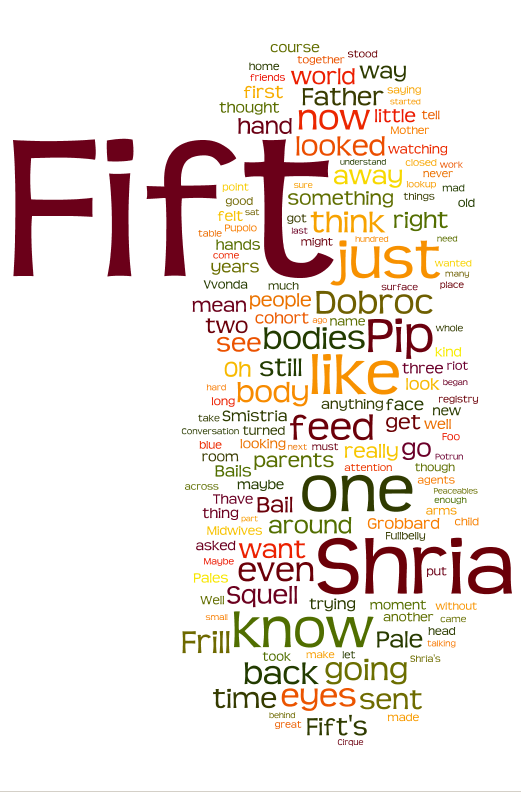

|
|
Finish Line
The first draft of my novel is done, clocking in at 95,452 words.

Hallelujah, free at last!
This is the novel formerly known as Resilience. It was called Resilience when someone named Siob (a half-million year old polymorphic Interpreter created by Maka of the Margin) was the main character.
Siob and I had a labor disagreement, resulting in a series of work stoppages and slowdowns, and then a final walkout in October 2009. After months of talks to try to resolve things, during which no progress was made on the book, and a summer break to write "The Guy Who Worked For Money", in October 2010 I fired Siob. (As you can see from the tag cloud above, Fift became the main character; as you can see from the previous tag cloud things were heading in that direction anyway, which was part of the grounds for the labor dispute. Although to be fair, Siob's narration was in first person and Fift's in third, so the old tag cloud massively understates Siob's presence).
The book was about 100,000 words long at that point, and Siob took 40,000 of them when Siob walked. (We are still in contact and I hope to arrive at a project more to Siob's liking at some point.)
Siob was fully revised out by November 15, 2010, at which point the book was 68,343 words long. After that I gradually accumulated momentum, allowing myself only to write 200-500 words a day (or an equivalent amount of cutting and revising), but trying to hit every single day. From April 10th to May 16th I missed only one day, for the Passover seder.
At this point I need to put the book aside for a while, and in a few months, when the story in my head is no longer totally in the way of seeing the story on the page, do another draft with the door closed, and then open it up to critiques.
In the meantime I'll be working on things that have been languishing -- sprucing up The Way to Go for submission, revising the nanotech-ocean-adventure middle-grade-reader that Paul Melko and I wrote a while back, and maybe a few short stories. Wheeee!
I will read from the just-completed book (whatever the heck it's called -- maybe "Unravelling"? Is that too depressing a title?) at Wiscon.
Posted by benrosen at May 17, 2011 12:50 PM | Up to blogCongrats on finishing... what I really admire is your finding a system that worked - 250 - 500 words a day... how did you keep your train of throught? Were those just the additions but you also had revisions that counted towards those 250 - 500 words a day?
What I tracked was net change in words. If the manuscript was 200-500 words longer than the day before that was a win. If it was 200 words or more shorter, that was also a win, because I tend to have a rhythm of spewing a lot, then going back and cutting half or more.
The metric broke down a little if I was engaged almost exclusively in rewording-type revisions rather than cuts or new progress. Then I would just have to estimate whether I'd done an equivalent amount of work.
Keeping train of thought was easy as long as I didn't skip a day. Best was really to stop in the middle of a sentence, so I'd be yearning to complete it. If I skipped a week, though, the trail was cold and I was in trouble.
Posted by: Benjamin Rosenbaum at May 17, 2011 01:20 PMWooot! Congratulations on finishing! That's fabulous.
Posted by: Steph Burgis at May 17, 2011 05:09 PMYeah!
Posted by: dmr at May 18, 2011 12:20 AMIndeed, well-deserved congratulations!
I stand in awe of your systematic self discipline, something I might have predicted on the evidence of your growing up, but instead I more often assigned your achievements to your intellectual gifts. We share a Saturday birthday, and I'm proud to see that you carry on the Smith=worker tradition.
Posted by: Mom at May 19, 2011 12:06 AMYay! Congratulations! Looking forward to hearing you read from it!
Posted by: Jed at May 21, 2011 08:37 PM